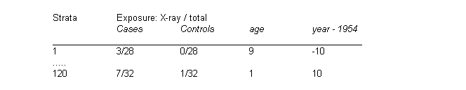
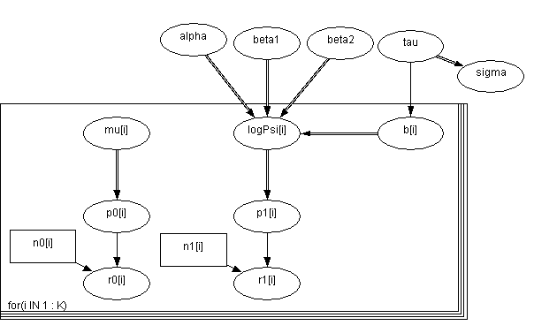
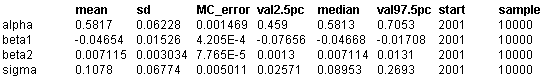

![[oxford0]](oxford0.bmp) Oxford: smooth fit to log-odds
Oxford: smooth fit to log-odds
ratios
Breslow and Clayton (1993) re-analyse 2 by 2 tables of cases (deaths from childhood cancer) and controls tabulated against maternal exposure to X-rays, one table for each of 120 combinations of age (0-9) and birth year (1944-1964). The data may be arranged to the following form.

Their most complex model is equivalent to expressing the log(odds-ratio)
y
i
for the table in stratum
i
as
log
y
i
=
a
+
b
1
year
i
+
b
2
(year
i
2
- 22) + b
i
b
i
~ Normal(0,
t
)
They use a quasi-likelihood approximation of the full hypergeometric likelihood obtained by conditioning on the margins of the tables.
We let r
0
i
denote number of exposures among the n
0
i
controls in stratum
i
, and r
1
i
denote number of exposures for the n
1
i
cases. The we assume
r
0
i
~ Binomial(p
0
i
, n
0
i
)
r
1
i
~ Binomial(p
1
i
, n
1
i
)
logit(p
0
i
) =
m
i
logit(p
1
i
) =
m
i
+ log
y
i
Assuming this model with independent vague priors for the
m
i
's provides the correct conditional likelihood. The appropriate graph is shown below

BUGS
language for Oxford example:
model
{
for (i in 1 : K) {
r0[i] ~ dbin(p0[i], n0[i])
r1[i] ~ dbin(p1[i], n1[i])
logit(p0[i]) <- mu[i]
logit(p1[i]) <- mu[i] + logPsi[i]
logPsi[i] <- alpha + beta1 * year[i] + beta2 * (year[i] * year[i] - 22) + b[i]
b[i] ~ dnorm(0, tau)
mu[i] ~ dnorm(0.0, 1.0E-6)
cumulative.r0[i] <- cumulative(r0[i], r0[i])
cumulative.r1[i] <- cumulative(r1[i], r1[i])
}
alpha ~ dnorm(0.0, 1.0E-6)
beta1 ~ dnorm(0.0, 1.0E-6)
beta2 ~ dnorm(0.0, 1.0E-6)
tau ~ dgamma(1.0E-3, 1.0E-3)
sigma <- 1 / sqrt(tau)
}
Data
( click to open )
Inits for chain 1
Inits for chain 2
( click to open )
Results
A 1000 update burn in followed by a further 10000 updates gave the parameter estimates

These estimates compare well with Breslow and Clayton (1993) PQL estimates of
a
= 0.566 +/- 0.070,
b
1
= -0.469 +/- 0.0167,
b
2
= 0.0071 +/- 0.0033,
s
= 0.15 +/- 0.10.